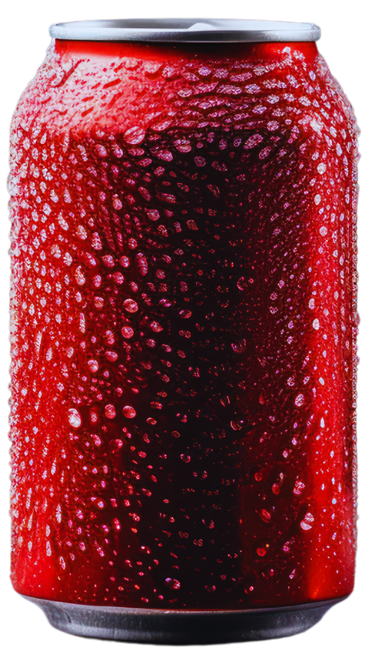
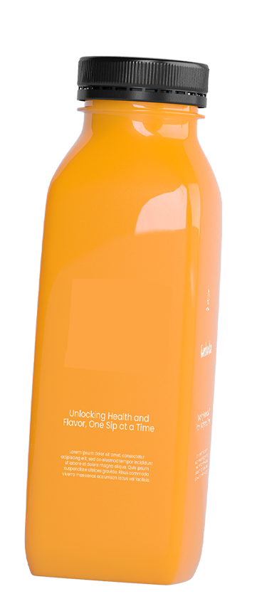
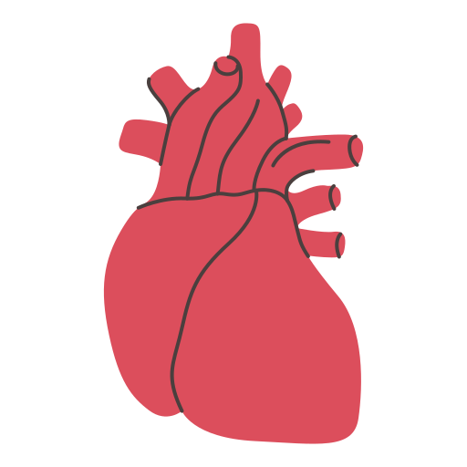
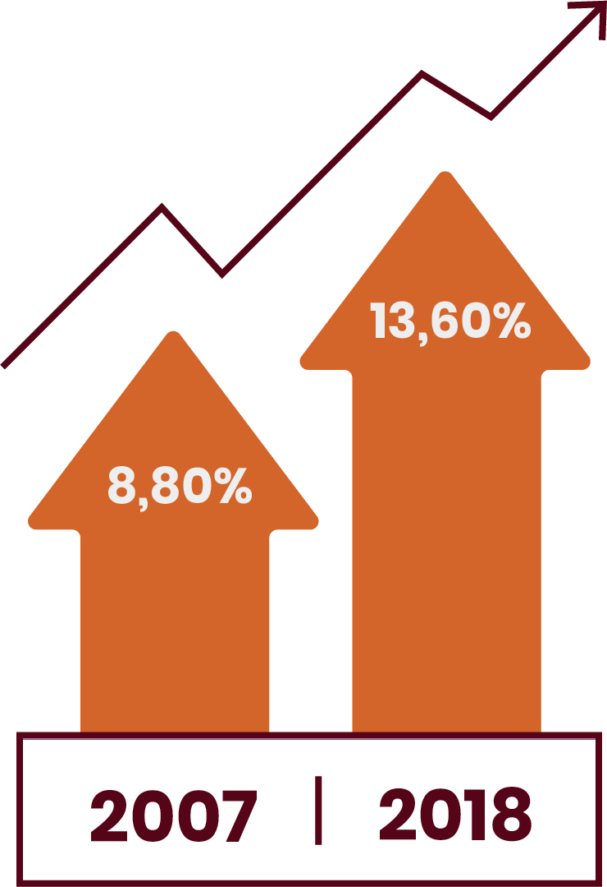
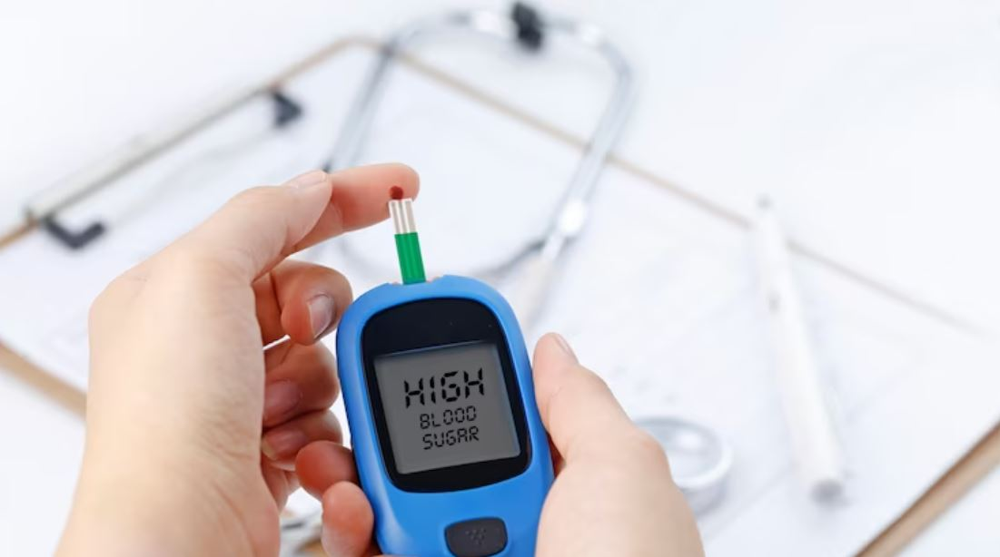

Indonesia menduduki peringkat ke-5 negara dengan jumlah diabetes terbanyak dengan 19,5 juta penderita di tahun 2021 dan diprediksi akan menjadi 28,6 juta pada 2045.
SPOTLIGHT
Yang ada manis-manisnya tak selalu berujung nikmat, bisa jadi malah pahit. Tingginya konsumsi minuman berpemanis di Indonesia menjadi salah satu pemicu utama penyakit kronis seperti diabetes.
Apa itu MBDK?
Menurut Center for Indonesia’s Strategic Development Initiatives (Cisdi) minuman berpemanis dalam kemasan atau MBDK meliputi:

- Semua produk minuman berpemanis dalam bentuk cair, konsentrat, maupun bubuk.
- Semua produk minuman dalam kemasan yang berpemanis (baik berpemanis gula maupun yang mengandung bahan tambahan pemanis yang lain).
Seberapa banyak konsumsi MBDK?
Dalam dua dekade terakhir, konsumsi minuman berpemanis dalam kemasan di Indonesia meningkat hingga 15 kali lipat. Dari 5 juta liter pada 1996, menjadi 405 juta liter pada 2014. Kurang lebih 67,4% rumah tangga di Indonesia mengonsumsi setidaknya satu jenis MBDK dalam seminggu terakhir (Survei Sosial Ekonomi Nasional 2022, dikutip dari paparan Cisdi).
Berdasarkan data Riset Kesehatan Dasar (Riskesdas) Indonesia 2018, sebanyak 61,3% penduduk di Indonesia mengonsumsi MBDK setidaknya sekali dalam sehari. Selain itu tingkat konsumsi makanan dan minuman manis di Indonesia sangat tinggi.
87,9
Makanan Manis
91,49
Minuman Manis
Berdasarkan survei YLKI pada 2023, sebanyak 57,5% penduduk usia anak dan remaja di perkotaan mengonsumsi MBDK 5 hingga 7 kali dalam seminggu.
Bagaimana anjuran pemerintah terkait konsumsi gula?

Dalam Permenkes Nomor 30 Tahun 2013, anjuran konsumsi gula per orang per hari adalah 10% dari total energi (200 kkal). Konsumsi tersebut setara dengan gula 4 sendok makan per orang per hari atau 50 gram per orang per hari.
Konsumsi MBDK berlebihan dapat mengakibatkan:

Kenaikan Berat Badan
Obesitas
Diabetes

Jantung
Tren obesitas di Indonesia terus naik
(dikutip dari paparan Cisdi)

Data International Diabetes Federation (IDF) pada 2021 menunjukkan:
- 0,5% populasi orang dewasa di dunia (20-79 tahun) mengidap diabetes.
- Sekitar 537 juta orang dewasa (20-79 tahun) hidup dengan diabetes.
- Jumlah total penderita diabetes diperkirakan akan meningkat menjadi 643 juta pada 2030 dan 783 juta pada 2045.
- 3 dari 4 orang dewasa penderita diabetes tinggal di negara berpendapatan rendah dan menengah.
Bagaimana di Indonesia?

Diabetes merupakan penyakit penyebab kematian tertinggi ke-3 di Indonesia tahun 2019, yaitu sekitar 57,42 kematian per 100.000 penduduk (Menurut Institute for Health Metrics and Evaluation).
Dalam kurun waktu 10 tahun (2013-2023) diagnosa rawat inap di RSUD DKI Jakarta paling banyak adalah diabetes.
Pada 2016 biaya perawatan diabetes beserta komplikasinya oleh BPJS Kesehatan adalah Rp 7,5 triliun (10% total pengeluaran BPJS Kesehatan).
Bagaimana ini dapat dicegah atau dikurangi?
Sebanyak 58% responden survei YLKI pada 2023 mendukung terhadap wacana pengenaan cukai pada MBDK. Sekitar 18% responden menjawab mereka akan mengurangi konsumsi MBDK jika terjadi kenaikan harga sebesar 25%.
Mengapa pengenaan cukai MBDK penting?
Menurut kajian Cisdi Kebijakan Cukai MBDK adalah salah satu bentuk kebijakan fiskal yang telah terbukti efektif di 49 negara lain untuk menurunkan konsumsi MBDK, mengurangi dampak negatif MBDK terhadap kesehatan.
Dari studi elastisitas harga menunjukkan bahwa pemberlakuan cukai MBDK di Indonesia sebesar 20% berpotensi menurunkan konsumsi MBDK sebesar 17,5%. Penurunan konsumsi MBDK akan turut menurunkan risiko terkena diabetes dan penyakit tidak menular lainnya.
Pemberlakuan cukai tahun 2024 diproyeksikan mampu:
- Menurunkan kasus baru diabetes tipe 2 setiap tahun.
- Secara akumulatif mencegah 3,1 juta kasus baru diabetes tipe 2 pada 2033.
- Tanpa pemberlakuan cukai, kasus baru diabetes dapat bertambah sebesar 2.451 per-hari.
- Secara kumulatif penerapan cukai MBDK dapat mencegah 3.095.643 kasus baru diabetes tipe dua dalam periode 10 tahun.
Sumber
- Paparan dan riset Cisdi.
- Survei YLKI Juni 2023 dengan 800 responden di 10 kota di Indonesia.
- Paparan International Diabetes Federation (IDF).
- Paparan dan Riset Kesehatan Dasar Indonesia 2018 Kementerian Kesehatan.
- Dinas Kesehatan DKI Jakarta.
Penulis & Pengolah Data
Ahmad Thovan Sugandi
Editor
Dieqy Hasbi Widhana
HTML5
Dedi Arief Wibisono